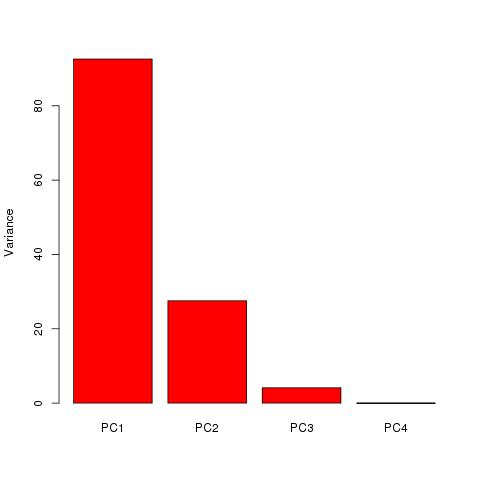
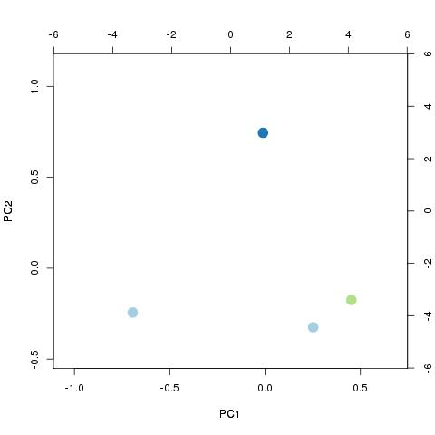
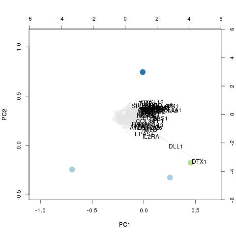
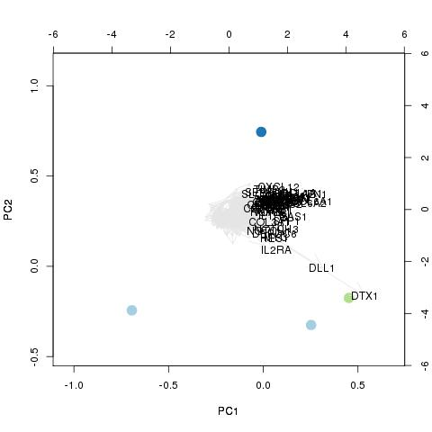
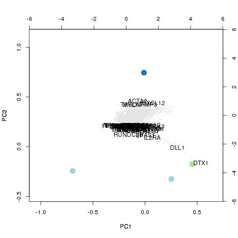

Exploratory analysis: PCA
Principal component analysis (PCA) (wikipedia) is a widly used technique used for eg data clustering and dimensionality reduction.Samples used and their conditions:
| sample | 13314_invitro_2h_GFP | 13315_invitro_2h_DL1 | 13316_invitro_4h_GFP | 13317_invitro_4h_DL1 |
| condition | 1 | 1 | 2 | 3 |
Explained variance
This plot shows how much of the variance in the data that is captured by each of the principal components. By definition the first component will have the highest explanatory value, the second component the second most and so on. Due to visualization constrains, the downstream analysis is limited to the first and the second axes. Hence, the more of the total variance that is explained by PC1 and PC2, the better this analysis will work.

Biplots
In the biplots, both the samples and the variables are shown simultaneous (wikipedia) . In the RNA-seq scenario this means that we can visualize how the different samples/conditions are separated from each other AND which of the genes are "most important" for this separation. The dots represent the samples, the color the condition of the samples and the arrows each and every one of the genes used in the analysis. The named arrows are the top contributors.
Three slightly different ways to identify the main contributors are used: Length - this means that the top longest arrows are identified. P1 - the genes are ordered based on their value of the first PC of choice. P2 - the genes are ordered based on their value on the second PC of choice. (Note taht it is possible that the same gene(s) come up in several of the lists.)
|  |  |  |  |
| samples only | length based | P1 based | P2 based |
Highlighted genes
Beneath you can download the gene lists corresponding to the biplots above.
length based
P1 based
P2 based
All genes included in PCA
(Page generated on Thu Jan 2 12:16:10 2014 by hwriter 1.3)